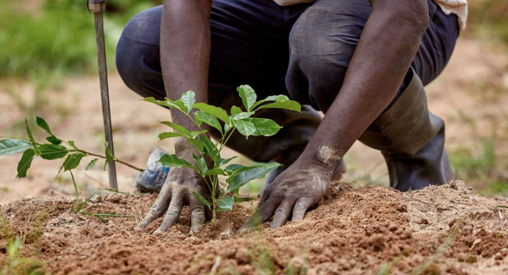
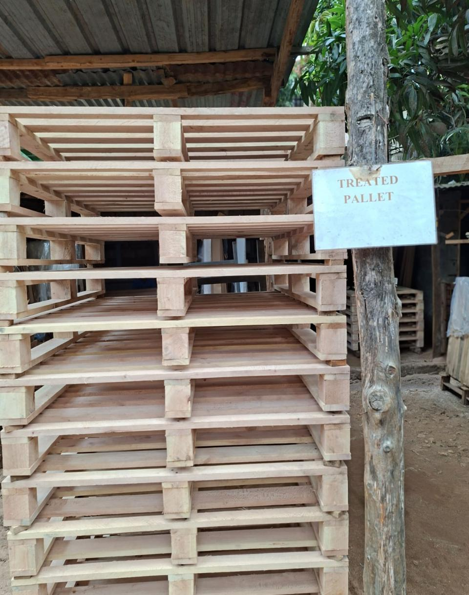

Since our founding in 2013, we've run a closed-loop forestry model that ensures our production never outpaces nature's ability to regenerate.

We ensure our wood comes from farms and forests managed for biodiversity and ecosystem health, not from land stripped for a single harvest. Every supplier relationship is built around the same long view we take with our own timberlands.

For every tree harvested for production, we promote the planting of multiple seedlings, maintaining a continuous cycle of growth that sequesters carbon and protects local soil quality. It's a simple ratio, and we treat it as non-negotiable.

We advocate for the repair and reuse of pallets to extend their working lifecycle. Damaged pallets are refurbished for secondary use, while non-serviceable wood is recycled into mulch or biofuel, so as little as possible ever ends up as true waste.
Our production is coordinated with partner facilities to reduce our carbon footprint and put more of the value back into the local community.

Managed by expert technicians, our production facilities turn out premium timber boards, heat-treated pallets, treated poles, and artisanal wood products, each one passing through hands that know the material well.

We act as a catalyst for growth in Kiambu, providing direct employment to many residents. By focusing on youth and female empowerment, we're turning our factories into hubs for modern wood science and carpentry, not just production lines.
We provide a guaranteed market for neighboring smallholder farmers, ensuring that the wealth generated by the land stays with the people who tend to it, rather than being routed elsewhere in the supply chain.